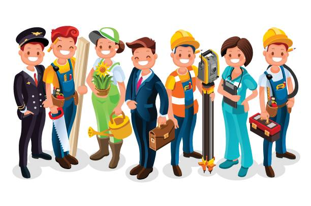

Main Page
Main Page  ICT
ICT  AP
AP Paglilingkod

https://media.istockphoto.com/id/912523184/vector/labor-day-cartoon-characters.jpg?s=612x612&w=0&k=20&c=RaZrl3BUYs_UJv0X4vDQy1dtH4pbFhwJos23PPNuXfU=
Ang umaalalay sa buong yugto ng produksyon, distribusyon, kalakalan, at pagkonsumo ng mga produkto sa loob o labas ng bansa.
Kilala rin ito bilang tersarya o ikatlong sektor ng ekonomiya matapos ang agrikultura at industriya.
Subsektor
- Transportasyon, Komunikasyon, at mga Imbakan
- Kalakalan
- Pananalapi
- Paupahang bahay at Real Estate
- Paglilingkod na Pampribado
- Paglilingkod ng Pampubliko
Mga Suliranin
- Unemployment
- Brain Drain
- Job mismatch
- Underemployment
Mga Ahensya
- Department of Labor and Employment (DOLE) Pangangalaga sa kapakanan ng mga manggagawang Pilipino, pagtataguyod ng maayos na oportunidad sa trabaho, at regulasyon ng mga patakaran sa paggawa sa bansa.
- Overseas Workers Welfare Administration (OWWA) Tumitingin sa kapakanan ng mga Overseas Filipino Workers
- Philippine Overseas Employment Administration (POEA) Isulong at paunlarin ang mga programa ukol sa paghahanapbuhay sa ibayong-dagat at pangalagaan ang kapakanan ng mga OFW.
- Technical Education and Skills Development Authority (TESDA) Hikayatin ang buong partisipasyon ng industriya, paggawa, mga lokal na pamahalaan, at mga institusyong teknikal at bokasyonal upang sanayin at paunlarin ang kasanayan ng mga manggagawa sa bansa.
- Professional Regulation Commission (PRC) Nangangasiwa at sumusubaybay sa gawain ng mga manggagawang propesyonal upang matiyak ang kahusayan sa paghahatid ng mga serbisyong propesyonal sa bansa.
- Commission on Higher Education (CHED) Nangangasiwa sa gawain ng mga pamantasan at kolehiyo sa bansa upang maitaas ang kalidad ng edukasyon sa mataas na antas.
Mga Halimbawa ng Batas na nangangalaga sa Karapatan ng mga Ilan lamang ang mga ito sa halimbawa ng batas na nangangalaga sa karapatan ng manggagawa. Para sa iba pang detalye, maaaaring tignan ang pinakabagon edisyon ng handbook ng benepisyo para sa mga manggagawa.